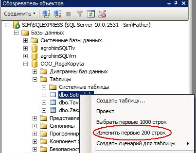
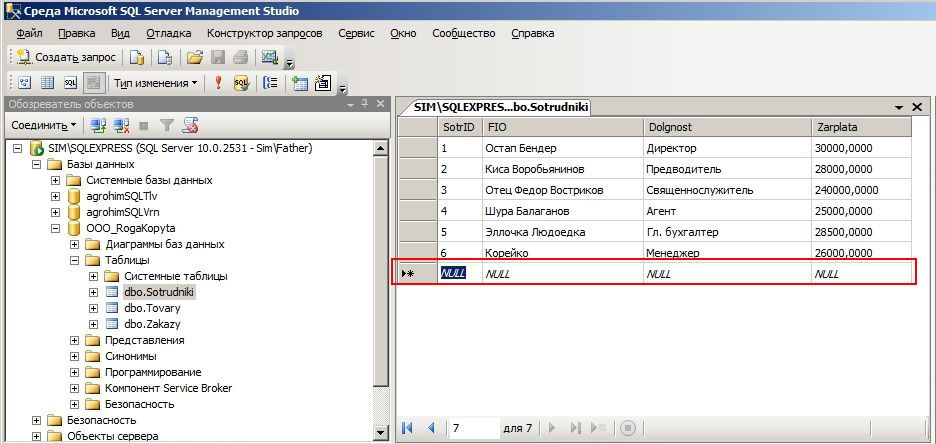
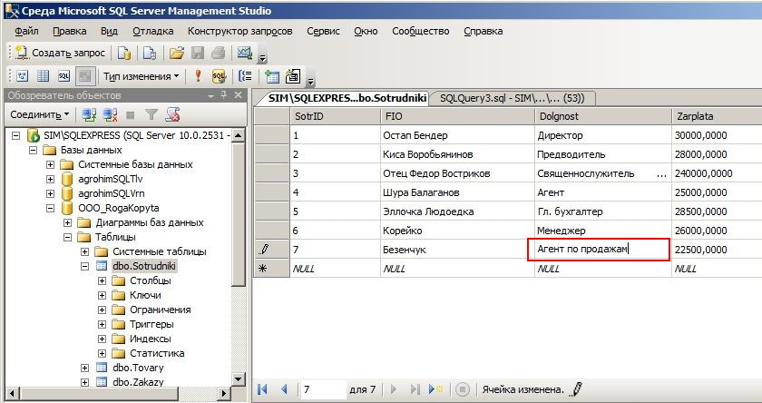

Добавление новых записей и изменения в таблице базы данных MS SQL Server Express в простейшем случае можно произвести сл. образом.
В SQL Server Management Studio в Обозревателе объектов выбираем нужную таблицу и в контекстном меню щёлкаем по Изменить первые 200 строк
Прим. Количество строк для просмотра/редактирования можно изменить в настройках

В правой панели отображается содержимое записей в таблице в нашей учебной базе данных. Для вставки новой строки становимся на ключевое поле последней пустой записи ( в нашем примере - SotrID):

... и начинаем вводить данные в соответствующих столбцах сетки.
Что характерно - вставить новые записи в таблицу можно и с использование SQL-командой Insert (забегая немного вперед, можно сказать что этот вариант с точки зрения автоматизации ввода новых записей является более предпочтительным). В случае нашего простого примера оно должно выглядеть так:
Insert into Sotrudniki (SotrId, FIO, Dolgnost, Zarplata) Values (7, 'Безенчук', 'Гробовщик', 22500.0)
Набрав (кнопка Создать запрос) и выполнив по F5 указанный SQL-запрос, должны получить результат, достигнутый описанным выше 'ручным' вводом в сетке таблицы.
Прим. Естественно, ничто не мешает создать несколько подряд идущих подобных предложений Insert и осуществить , таким образом, пакетный ввод данных, что-то вроде такого для случая нашего примера:
Insert into Sotrudniki (SotrId, FIO, Dolgnost, Zarplata) Values (1, 'Остап Бендер', 'Директор', 30000.0)
Insert into Sotrudniki (SotrId, FIO, Dolgnost, Zarplata) Values (2, 'Киса Воробьянинов', 'Предводитель', 28000.0)
Insert into Sotrudniki (SotrId, FIO, Dolgnost, Zarplata) Values (3, 'Федор Востриков', 'Священнослужитель', 24000.0)
...
Insert into Sotrudniki (SotrId, FIO, Dolgnost, Zarplata) Values (6, 'Корейко, 'Менеджер', 26000.0)
Подобную конструкцию, состоящую из нескольких SQL-предложений называют скриптом. По существу, это небольшая программка, которая реализует выполнение последовательности каких-то действий с MS SQL Server (впрочем, не только его) . Если вы являетесь разработчиком информационной системы, и есть необходимость произвести удаленно какие-то изменения в базе данных Заказчика, то в некоторых случаях удобно произвести такие поправки именно с помощью подобного скрипта. Только, понятное дело, предварительно работу скрипта надо хорошенько протестировать. А то можно и накуролесить ... Переслать скрипт проще всего по электронной почте, или даже с помощью мессенджера типа ICQ как обычный текстовый файл.
Однако продолжим. Аналогичным образом ( по меню Изменить первые ... строк) можно подправить записи в таблице ( в примере ниже - Должность сотрудника):

После ввода нового значения в поле просто жмём Enter.
SQL-запрос на скриптовое обновление записи будет выглядеть так:
Update Sotrudniki set Dolgnost = 'Агент по продажам' Where SotrId = 7
В заключении необходимо заметить, что ввод данных непосредственно в табличку средствами Management Studio через меню Изменить первые <...> записи можно рекомендовать лишь в простейших (типа заполнения справочников) и/или чрезвычайных ситуациях - это ни в коем случае не должно быть нормой! Как правило, заполнение базы происходит через пользовательский интерфейс специально созданной программой (или посредством конструкции Insert, вроде той, что была рассмотрена выше).
Прим. Еще один подход к пакетной загрузке данных в MS SQL из текстовых файлов типа txt, csv или xml можно реализовать командой BULK INSERT. Но, строго говоря, это тема отдельного разговора